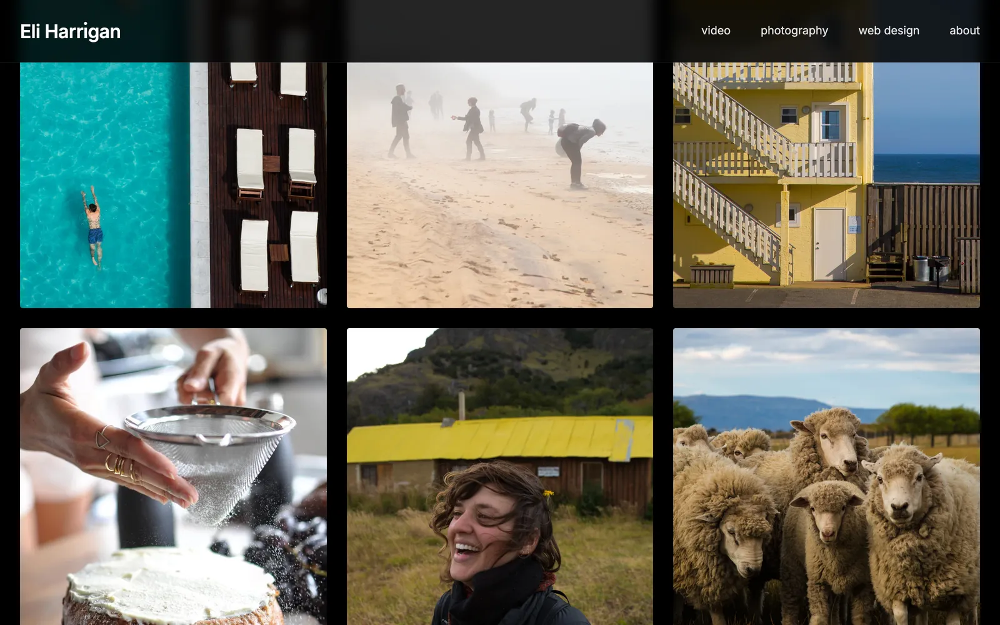

eliharrigan.com
Editor and photographer portfolio · the site you are on
Design, copy, and build
This is the site you are reading right now, which makes it the easiest case study here to check. It carries fifteen years of commercial editing and directing work, a photography portfolio, and the page you clicked to get here.
A film portfolio lives or dies on its thumbnails, so the thumbnails play. Roll over a project and it starts moving; on a phone, whichever card you pass picks itself and plays. Each project opens into its own page with the films presented plainly. And if you are on a desktop, look at the dot over the i in the wordmark. It has somewhere to be.

There is no builder or template underneath any of this. The pages are written by hand, so they load fast, hover exactly the way I want them to, and never surprise me with someone else’s redesign. When I tell a client their site can feel considered all the way down, this one is the proof. You are inside the demo right now.